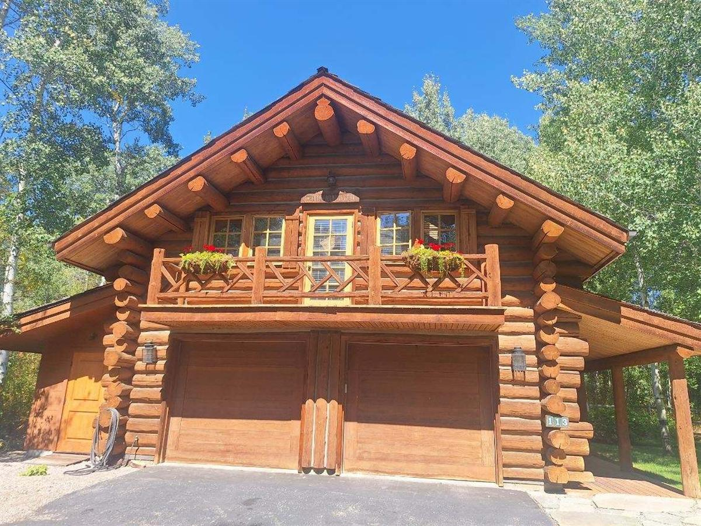

Idaho winters don't damage log homes directly — they exploit whatever was already weak in October. Water gets behind failed chinking, freezes, and pries it open wider. Snow piles against unsealed lower logs. By spring, a small problem has compounded. This is the checklist we'd run on our own homes every fall, in the order that matters.

The fall checklist
1. Walk every chinking line
Look for cracks along the joints, sections pulling away from the logs, and gaps you can see daylight through. Failed chinking is the #1 winter vulnerability, because freeze-thaw actively makes it worse all season. If you find failures, deal with them before the freeze — our guide to chinking costs explains why spot repairs caught early are a fraction of the price.
2. Test the stain
Flick water on the sunniest wall. If it soaks in instead of beading, the logs are going into winter unprotected. Late fall staining is weather-dependent, so if the finish has failed, call sooner rather than later.
3. Clear roof drainage and gutters
Every gallon of snowmelt that overflows a clogged gutter runs down your log walls. Clean gutters and downspouts, and check that they discharge away from the foundation — not against your bottom courses.
4. Check the splashback zone
The bottom two or three log courses take snow-bank contact and roof-drip splash all winter. Probe them for soft spots, look for dark staining, and make sure snow won't pile directly against wood. This is where we find most of the rot in restoration work.
5. Look up at the roofline
Check for shifted flashing, damaged shingles or panels, and gaps where ice dams could push water under the roof edge and down into log walls. Binoculars are fine — the point is to look before the roof is under three feet of snow.
6. Book repairs while the weather holds
Chinking and staining both need decent temperatures to cure properly. In the Wood River Valley that window closes fast — a failure found in November may have to wait until spring, protected by little more than a tarp. Found in September, it's fixed in a week.
If you're not here to check it
Many of the homes we maintain belong to out-of-state owners. We do fall walk-throughs, document everything with photos, and handle whatever the home needs before winter — so the version of the house you find at Christmas is the one you left in September.
Want the checklist run by the people who build these homes? Call 208-897-8100 and get on the fall schedule.